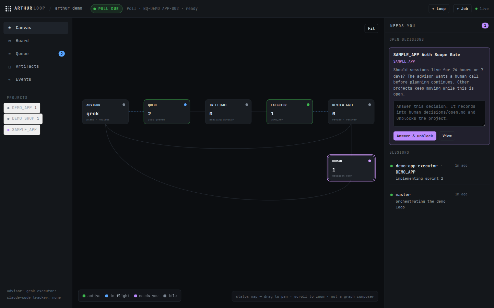
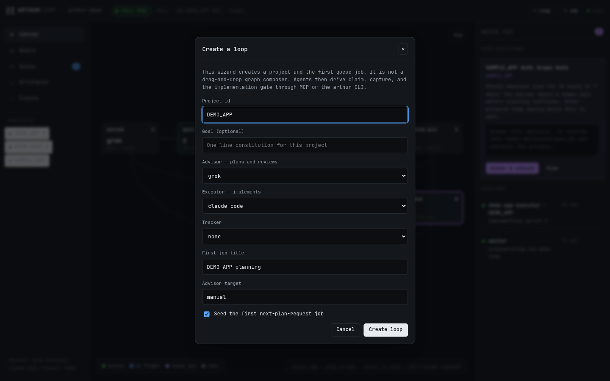

Open source · v0.1.0
Long-running AI dev loops, held to a written contract.
File-first control plane for AI dev loops — bring your own advisor, executor, and tracker.
Python 3.9+ · macOS and Linux · core needs no API key
- MIT licensed
- JSONL state
- localhost web console
- Advisor planssaved first
- Queue recordsidempotent
- Executor worksone packet
- Review gaterequired
- Human decidesproject-scoped
01 / FAILURE MODES
The seams are the product.
Arthur Loop does not choose your models. It keeps the handoffs between them inspectable and recoverable.
Crash without amnesia
Append-only queue ledgers and saved artifacts replay to the last recorded step after a terminal, browser, or agent dies; recovery frees the dead manager's lease.
Gate untrusted output
Advisor text is stored before use. Only the final fenced control block is parsed, and unexpected values are quarantined.
Block one project
A human question pauses the project that asked it. Other projects keep moving through the same loop.
See the state
arthur status, JSON output, MCP tools, and the local web console read the same files. No database or hosted dashboard sits in the middle.Bring your stack
Mix browser, CLI, or manual advisors with Codex, Claude Code, Grok Build, Atlas Tasker boards, and optional quota sources. Cursor gets skills and MCP, not a shipped executor pack.


02 / INSTALL
One tool. Three paths.
Each method installs an isolated arthur command. Pick the package tool already on your machine.
Then run mkdir ~/my-loop && cd ~/my-loop && arthur init. The wizard detects agent CLIs on PATH, writes skills where those clients load them, and for Grok runs grok mcp add so tools are trusted. Then arthur follow --once.
03 / FAQ
Before you wire it in.
What do I get?
A Python CLI for durable AI planning and implementation loops, a stdio MCP server so coding agents can drive the loop, skills written where those clients load them, a local web console with a create-loop wizard, desktop notifications, adapter packs (including Grok Build), and an optional native macOS menu bar view. You choose the advisor, executor, tracker, and quota source.
Is Arthur Loop free?
Yes. Arthur Loop is MIT licensed and has no paid tier.
Where is my data stored? Does it phone home?
Queues, artifacts, decisions, sessions, and quota snapshots stay as markdown and JSONL inside the instance directory you choose. The core does not phone home or require an API key. Adapters only invoke tools you configure.
Which platforms are supported?
The Python CLI is exercised on macOS and Linux with Python 3.9 or newer. The file formats are portable, but locks and browser adapters are not yet tested on Windows. ArthurBar requires macOS 14 or newer.
How do I update or uninstall it?
Repeat the pipx, uv, or curl install command to update. Uninstall with pipx uninstall arthur-loop or uv tool uninstall arthur-loop. Curl installs can be removed by deleting ~/.arthur-loop and ~/.local/bin/arthur.
Why not use a shell script or a workflow engine?
Arthur Loop is for the trust seams around AI work: saving advisor output before acting on it, validating control blocks, refusing duplicate jobs, preserving review gates, and pausing only the project that needs a human. It stays small enough to inspect without turning the loop into a hosted platform.
How do I install this development branch?
The three commands on this page install default git HEAD (usually main; last tag v0.1.0). This unreleased branch: pipx install 'git+https://github.com/myrrazor/arthur-loop.git@cursor/atlas-product-gap-ab6b'. arthur --version still reports 0.1.0 until the next tag.
04 / SUPPORT
Useful beats viral.
Arthur Loop is free and always will be. If it saves you from one lost handoff, star the repo so the next person running a long agent loop can find it.